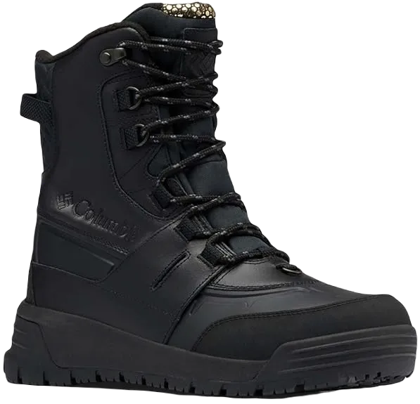
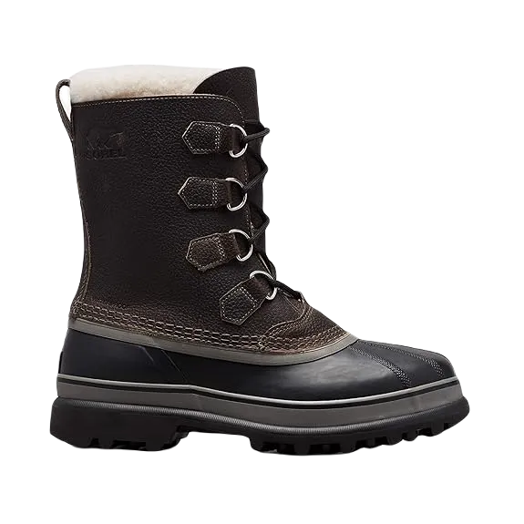
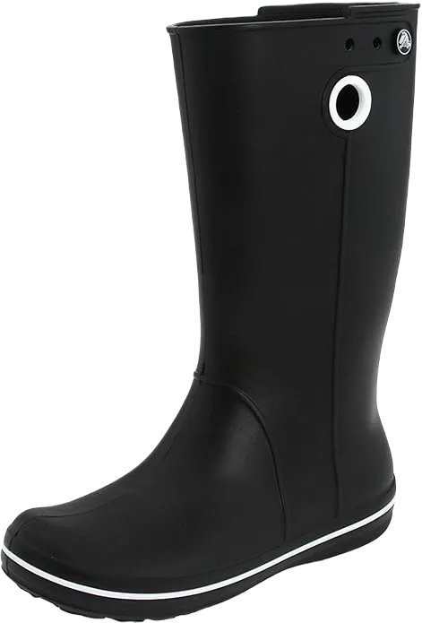

9 Best Shoes for Walking on Ice and Icy Pavements 2023
People living in cold climates require a unique lifestyle to cope with harsh weather conditions, especially when it comes to selecting the best shoes for icy pavements. Snow not only complicates the challenge of staying warm but also makes daily activities, such as walking, more difficult.
To navigate snowy conditions effectively, it’s essential to invest in shoes specifically designed for icy roads. These shoes provide the necessary traction and support to ensure safe and comfortable movement, allowing you to carry out everyday tasks without the fear of slipping or falling.
-
#1
COLUMBIA BOGABOOT II
.webp)
The Columbia Bugaboot II black boots could be the perfect choice for you, especially in challenging conditions. Made from 100% water-repellent cowhide, these boots effectively prevent moisture from entering, allowing you to dress up and walk in cold, wet environments without worrying about them getting damaged.
Columbia incorporates a wick-like liner to ensure proper airflow, keeping your feet dry and odor-free throughout the day. The interior of the Bugaboot II features insulation and liners that provide the warmth you need, eliminating concerns about cold feet.
The Omni-Grip non-marking sole enhances your traction on icy surfaces, while the Techlite cushioned midsole delivers the comfort necessary for smooth movement, making these boots an excellent choice for winter activities. -
#2
UGG guys’s Butte Snow Boots
.webp)
You now understand that snowy sidewalks can be deceptive and hazardous, making it essential to invest in the right footwear. Fortunately, UGG offers some of the most affordable and durable snow boots on the market. Their men's Butte boots are a prime example, designed for tackling icy conditions. These boots are crafted from a combination of premium cowhide, leather, and synthetic materials, ensuring both durability and style.
The UGG Butte boots feature a slip-resistant outsole that enhances traction, providing a secure footing for a smoother journey. The engineered outsole incorporates treads that deliver superior grip, remarkable strength, and enhanced stability, helping you stay balanced even in challenging conditions.
Designed to prevent foot frostbite, the Butte boots keep your feet warm even when temperatures drop to -20 degrees Celsius. They also come with a moisture-wicking shield, preventing dampness from seeping in, especially in cold and wet environments. The plush fur lining and soft fleece work together to ensure your feet remain dry and cozy at all times. -
#3
COLUMBIA men’S BUGABOOT
The original Bugaboot, a predecessor to the Bugaboot II, is an excellent choice for navigating snow and ice with confidence. These boots are lightweight, ensuring they won't add unnecessary bulk to your feet while you walk.
Equipped with 200 grams of Thinsulate insulation, they provide the warmth needed for comfortable movement, even in frigid conditions. You won't have to worry about frostbite in areas where temperatures can drop to -25°F, as the waterproof exterior prevents moisture from penetrating the boots.
This feature not only keeps your feet dry but also allows for unhindered movement without the concern of unpleasant odors. The rubber outsole boasts robust studs that enhance grip on snowy surfaces, while the protective lace shaft adds extra support, helping to prevent slips. With their flexibility, these boots offer a more comfortable ride compared to many other options available. -
#4
ICEBUG METRO BUGRIP
.webp)
The Ice Bug Metro BUGrip-W is equipped with features such as carbide replicas and facet zippers, all designed to give you an excellent boost in performance and comfort. These boots are crafted from a combination of advanced materials, ensuring they fit snugly and comfortably—perfect for when the snow outside is two to three inches deep. They are rated for temperatures as low as -4°F / -20°C, making them suitable for use in particularly harsh weather conditions.
The Metro BUGrip-W boasts a waterproof coating that effectively keeps your feet dry by repelling moisture. Comfort is further enhanced by the insulation, which protects against cold and provides the warmth necessary for walking in frigid conditions. This means they can adapt to various terrains, whether you're navigating through deep snow or traversing icy roads.
The soles are specifically designed for colder surfaces, offering excellent grip and traction. This feature allows you to move confidently without the fear of slipping, ensuring a secure footing in challenging environments. -
#5
SPERRY POWDER district
.webp)
These boots offer an impressive level of protection, providing warmth from the moment you start walking until you stop. In addition to their waterproof upper, which offers significant safety in low visibility, the concealed insulation and Thinsulate membrane work together to keep your feet warm throughout the day. Outdoor polar ice grips have long been designed for the primary industrial purpose of these boots.
They deliver the durability needed for easy movement, effectively insulating against cold temperatures. Furthermore, they are designed to be effective in wet conditions, allowing you to walk confidently without worrying about slipping or falling.
This combination of features makes them an excellent choice for anyone needing reliable footwear in challenging weather conditions. -
#6
SALAMON men’S X extremely wintry
.webp)
Salomon isn’t just playing tricks with its mounting tools; they focus on the details when designing exceptional footwear for walking on cold roads. The brand created the X Ultra boots by combining various techniques to enhance comfort and performance. The use of lightweight Thinsulate provides the warmth necessary for a cozy winter experience, while additional safety features protect your feet from hypothermia, alleviating concerns about frostbite during your activities.
Waterproofing adds an extra layer of protection, effectively keeping moisture out, which is essential for maintaining warmth and dryness in cold conditions. The unique pull-out design, featuring a durable casing reinforced with pressure, ensures a secure fit.
By following these design principles, you can fully enjoy your adventures without worrying about slipping or falling. Additionally, the comfortable insoles maintain optimal boot temperature while keeping your feet cozy. -
#7
SOREL CARIBOU BOOT
These waterproof boots feature soft cowhide leather and a removable leather interior, ensuring warmth, comfort, and protection in winter weather. The flexible design, complemented by a thick sole, guarantees mobility and ease of movement.
This Canadian brand is renowned for crafting robust boots designed to tackle the harsh North American winter. These boots have a substantial appearance and are built to perform, giving you the confidence to face even the most challenging winter conditions.
With their sturdy construction, you’ll feel ready to venture out, even as if you could take on the North Pole itself! -
#8
MUCK BOOT ARCTIC game RUBBER
.webp)
Ideal for outdoor work or leisure activities in cold climates, the Muck Arctic Sport Rubber High-Performance Men's Winter Boots are expertly engineered to keep your feet warm in temperatures as low as 40°F (-40°C). These boots provide the confidence you need to stand in snow that reaches up to your ankles without worrying about cold air or moisture seeping in.
Designed with an emphasis on support and comfort, these protective boots feature a reinforced spine that enhances their durability and stability. The insulation provides exceptional warmth, while the cushioned foam layer beneath the footbed ensures that your feet remain cozy and well-supported even during extended wear.
The robust construction and high-quality materials of these boots guarantee that you can tackle any outdoor activity with ease, whether you're working, hiking, or engaging in recreational activities in the snow. The combination of comfort and protection allows you to focus on your tasks or enjoy your time outdoors, knowing that your feet are shielded from harsh winter conditions. With the Muck Arctic Sport boots, you can confidently embrace the cold while maintaining warmth and comfort throughout your day. -
#9
CROC JAUNT WELLIES
Perfect for drivers, hardware managers, and workers operating in harsh winter weather, these Dakota shoes are designed with advanced features to ensure your comfort and safety. They incorporate breathable, waterproof HYPER-DRI® HD3 technology, which effectively keeps your feet dry, while the insulated liners provide added warmth against the cold.
You’ll appreciate the exceptional support for your feet as you navigate icy conditions, thanks to the innovative materials used in their construction. The combination of high-quality, durable materials ensures that these shoes offer both comfort and functionality, making them ideal for various outdoor tasks. Whether you’re managing equipment or running errands, these shoes will provide you with the stability and support you need.
Additionally, the removable Airgel insoles are a standout feature, working in conjunction with advanced quad comfort technology to ensure that your feet remain cozy and well-supported during long walks. This thoughtful design prioritizes your comfort and safety in challenging weather conditions, reducing fatigue and allowing you to stay on your feet longer. With these Dakota shoes, you can confidently face the elements while maintaining a high level of comfort, making them a reliable choice for any winter endeavor.